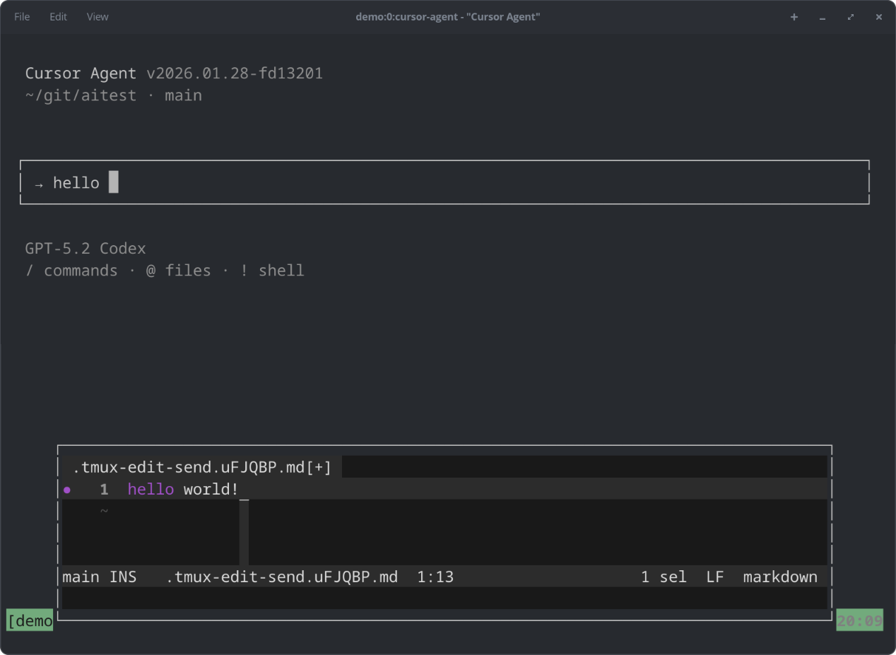
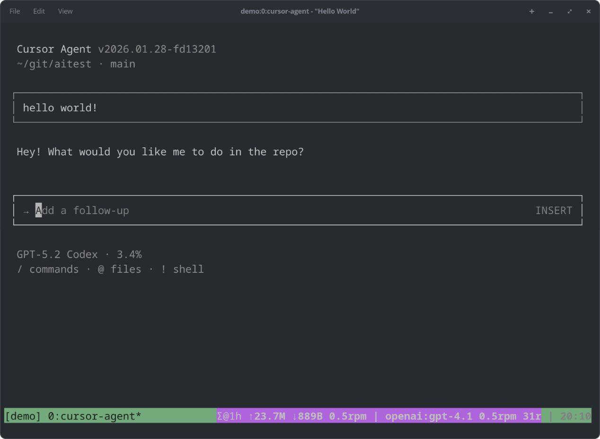

Home | Markdown | Gemini | Microblog | Street photography

bind-key e run-shell -b "tmux display-message -p '#{pane_id}'
> /tmp/tmux-edit-target-#{client_pid} \;
tmux popup -E -w 90% -h 35% -x 5% -y 65% -d '#{pane_current_path}'
\"~/scripts/tmux-edit-send /tmp/tmux-edit-target-#{client_pid}\""
┌────────────────────┐ ┌───────────────┐ ┌─────────────────────┐ ┌─────────────────────┐
│ Cursor input box │-->| tmux keybind │-->| popup runs script │-->| capture + prefill │
│ (prompt pane) │ │ prefix + e │ │ tmux-edit-send │ │ temp file │
└────────────────────┘ └───────────────┘ └─────────────────────┘ └─────────────────────┘
|
v
┌────────────────────┐ ┌────────────────────┐ ┌────────────────────┐ ┌────────────────────┐
│ Cursor input box │<--| send-keys back |<--| close editor+popup |<--| edit temp file |
│ (prompt pane) │ │ to original pane │ │ (exit $EDITOR) │ │ in $EDITOR │
└────────────────────┘ └────────────────────┘ └────────────────────┘ └────────────────────┘

#!/usr/bin/env bash
set -u -o pipefail
LOG_ENABLED=0
log_file="${TMPDIR:-/tmp}/tmux-edit-send.log"
log() {
if [ "$LOG_ENABLED" -eq 1 ]; then
printf '%s\n' "$*" >> "$log_file"
fi
}
# Read the target pane id from a temp file created by tmux binding.
read_target_from_file() {
local file_path="$1"
local pane_id
if [ -n "$file_path" ] && [ -f "$file_path" ]; then
pane_id="$(sed -n '1p' "$file_path" | tr -d '[:space:]')"
# Ensure pane ID has % prefix
if [ -n "$pane_id" ] && [[ "$pane_id" != %* ]]; then
pane_id="%${pane_id}"
fi
printf '%s' "$pane_id"
fi
}
# Read the target pane id from tmux environment if present.
read_target_from_env() {
local env_line pane_id
env_line="$(tmux show-environment -g TMUX_EDIT_TARGET 2>/dev/null || true)"
case "$env_line" in
TMUX_EDIT_TARGET=*)
pane_id="${env_line#TMUX_EDIT_TARGET=}"
# Ensure pane ID has % prefix
if [ -n "$pane_id" ] && [[ "$pane_id" != %* ]] && [[ "$pane_id" =~ ^[0-9]+$ ]]; then
pane_id="%${pane_id}"
fi
printf '%s' "$pane_id"
;;
esac
}
# Resolve the target pane id, falling back to the last pane.
resolve_target_pane() {
local candidate="$1"
local current_pane last_pane
current_pane="$(tmux display-message -p "#{pane_id}" 2>/dev/null || true)"
log "current pane=${current_pane:-<empty>}"
# Ensure candidate has % prefix if it's a pane ID
if [ -n "$candidate" ] && [[ "$candidate" =~ ^[0-9]+$ ]]; then
candidate="%${candidate}"
log "normalized candidate to $candidate"
fi
if [ -n "$candidate" ] && [[ "$candidate" == *"#{"* ]]; then
log "format target detected, clearing"
candidate=""
fi
if [ -z "$candidate" ]; then
candidate="$(tmux display-message -p "#{last_pane}" 2>/dev/null || true)"
log "using last pane as fallback: $candidate"
elif [ "$candidate" = "$current_pane" ]; then
last_pane="$(tmux display-message -p "#{last_pane}" 2>/dev/null || true)"
if [ -n "$last_pane" ]; then
candidate="$last_pane"
log "candidate was current, using last pane: $candidate"
fi
fi
printf '%s' "$candidate"
}
# Capture the latest multi-line prompt content from the pane.
capture_prompt_text() {
local target="$1"
tmux capture-pane -p -t "$target" -S -2000 2>/dev/null | awk '
function trim_box(line) {
sub(/^ *│ ?/, "", line)
sub(/ *│ *$/, "", line)
sub(/[[:space:]]+$/, "", line)
return line
}
/^ *│ *→/ && index($0,"INSERT")==0 && index($0,"Add a follow-up")==0 {
if (text != "") last = text
text = ""
capture = 1
line = $0
sub(/^.*→ ?/, "", line)
line = trim_box(line)
if (line != "") text = line
next
}
capture {
if ($0 ~ /^ *└/) {
capture = 0
if (text != "") last = text
next
}
if ($0 ~ /^ *│/ && index($0,"INSERT")==0 && index($0,"Add a follow-up")==0) {
line = trim_box($0)
if (line != "") {
if (text != "") text = text " " line
else text = line
}
}
}
END {
if (text != "") last = text
if (last != "") print last
}
'
}
# Write captured prompt text into the temp file if available.
prefill_tmpfile() {
local tmpfile="$1"
local prompt_text="$2"
if [ -n "$prompt_text" ]; then
printf '%s\n' "$prompt_text" > "$tmpfile"
fi
}
# Ensure the target pane exists before sending keys.
validate_target_pane() {
local target="$1"
local pane target_found
if [ -z "$target" ]; then
log "error: no target pane determined"
echo "Could not determine target pane." >&2
return 1
fi
target_found=0
log "validate: looking for target='$target' in all panes:"
for pane in $(tmux list-panes -a -F "#{pane_id}" 2>/dev/null || true); do
log "validate: checking pane='$pane'"
if [ "$pane" = "$target" ]; then
target_found=1
log "validate: MATCH FOUND!"
break
fi
done
if [ "$target_found" -ne 1 ]; then
log "error: target pane not found: $target"
echo "Target pane not found: $target" >&2
return 1
fi
log "validate: target pane validated successfully"
}
# Send temp file contents to the target pane line by line.
send_content() {
local target="$1"
local tmpfile="$2"
local prompt_text="$3"
local first_line=1
local line
log "send_content: target=$target, prompt_text='$prompt_text'"
while IFS= read -r line || [ -n "$line" ]; do
log "send_content: read line='$line'"
if [ "$first_line" -eq 1 ] && [ -n "$prompt_text" ]; then
if [[ "$line" == "$prompt_text"* ]]; then
local old_line="$line"
line="${line#"$prompt_text"}"
log "send_content: stripped prompt, was='$old_line' now='$line'"
fi
fi
first_line=0
log "send_content: sending line='$line'"
tmux send-keys -t "$target" -l "$line"
tmux send-keys -t "$target" Enter
done < "$tmpfile"
log "sent content to $target"
}
# Main entry point.
main() {
local target_file="${1:-}"
local target
local editor="${EDITOR:-vi}"
local tmpfile
local prompt_text
log "=== tmux-edit-send starting ==="
log "target_file=$target_file"
log "EDITOR=$editor"
target="$(read_target_from_file "$target_file" || true)"
if [ -n "$target" ]; then
log "file target=${target:-<empty>}"
rm -f "$target_file"
fi
if [ -z "$target" ]; then
target="${TMUX_EDIT_TARGET:-}"
fi
log "env target=${target:-<empty>}"
if [ -z "$target" ]; then
target="$(read_target_from_env || true)"
fi
log "tmux env target=${target:-<empty>}"
target="$(resolve_target_pane "$target")"
log "fallback target=${target:-<empty>}"
tmpfile="$(mktemp)"
log "created tmpfile=$tmpfile"
if [ ! -f "$tmpfile" ]; then
log "ERROR: mktemp failed to create file"
echo "ERROR: mktemp failed" >&2
exit 1
fi
mv "$tmpfile" "${tmpfile}.md" 2>&1 | while read -r line; do log "mv output: $line"; done
tmpfile="${tmpfile}.md"
log "renamed to tmpfile=$tmpfile"
if [ ! -f "$tmpfile" ]; then
log "ERROR: tmpfile does not exist after rename"
echo "ERROR: tmpfile rename failed" >&2
exit 1
fi
trap 'rm -f "$tmpfile"' EXIT
log "capturing prompt text from target=$target"
prompt_text="$(capture_prompt_text "$target")"
log "captured prompt_text='$prompt_text'"
prefill_tmpfile "$tmpfile" "$prompt_text"
log "prefilled tmpfile"
log "launching editor: $editor $tmpfile"
"$editor" "$tmpfile"
local editor_exit=$?
log "editor exited with status $editor_exit"
if [ ! -s "$tmpfile" ]; then
log "empty file, nothing sent"
exit 0
fi
log "tmpfile contents:"
log "$(cat "$tmpfile")"
log "validating target pane"
validate_target_pane "$target"
log "sending content to target=$target"
send_content "$target" "$tmpfile" "$prompt_text"
log "=== tmux-edit-send completed ==="
}
main "$@"